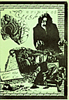
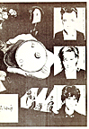

Issues 11 - 20
Issue No. 11
Spring 1991
"In The Studio" - for Moving Pictures
"The Songs Remain The Same?" Pt.3 - by Neil Elliott
"Another Rush Newsletter" by Neil Peart - February 10, 1990
"Moving Pictures World Premiere" - February 11, 1981
"Off The Record" Pt.2 - by Steve Adams
Issue No. 12
Summer 1991
"BBC Rock Hour" w/Alex Lifeson - July 1981
Canadian Musician article - April 1990
Alex Lifeson interview - December 15, 1987
"Off The Record" w/Geddy Lee - 1981
"Another Rush Newsletter" by Neil Peart - August 1982
Sounds review of Moving Pictures - February 1981

Issue No. 13
Autumn/Winter 1990/1991
Hemispheres Radio Special, 1978 Band Interview
"Rock Stars" Interview with Geddy - Dec. 24 1989
"The World According to Peart" from Muziekkrant Aug. 27 1983
"Off the Record" - 1982
"Show and Tell" from Music Express Feb. 1990
"Another Rush Newsletter" by Neil Peart

Issue No. 14
Spring 1991
"Interview w/Geddy at the 10th Pinkpop Festival"
"Off The Record" for Grace Under Pressure -- 1984
"Our Great Computers..." by Andy Currid
(about the mailing list TNMS)
"Another Rush Newsletter" by Neil Peart -- September 1983
Rush Trivia -- timeline of Rush
"Interview w/Alex" on Q107 -- November 20, 1990
Guitar World article -- March 1990
Issue No. 15
Summer 1991
Rockline -- April 30, 1990
Rush Trivia -- Rush support acts
"The Purple Prevost" -- by Ken Fermaglich
"The CD Revolution" -- by Neil Elliott
Circus magazine article -- 1976
"Off The Record" for Power Windows
"The Whole of the MOON" -- by Jerry Brown
Issue No. 16
Autumn 1991
"World Premiere of Roll The Bones" - August 27, 1991
"Kubla Khan" - by Samuel Taylor Coleridge
"Dem Bones, Dem Bones" - Geddy interview by Steve Adams
"Keeping Time For Rush" - Cincinnati newspaper article
Roll The Bones reviews
"Row The Boats" - by Neil Peart
Issue No. 17
Winter 91/92
Part 2 of Steve Adam's exclusive interview with Geddy Lee
Neil Peart on Rockline -- December 2, 1991
"Behind the Camera Eye" -- An Interview
with Andrew MacNaughtan (Part One)
"Experience to Extremes: The Never Ending Rush Story" -- by Steve Streeter
Rush Trivia -- Rush support acts
Issue No. 18
Spring 1992
Roll The Bones Radio Special
Readers reviews of the shows
"Behind the Camera Eye" -- An
Interview with Andrew MacNaughtan (Part Two)
"Off The Record" for Hold Your Fire
Issue No. 19
Summer 1992
"Rush Job" - Steve Adams int. w/Alex Lifeson
"Its A Cracker (Geddit?)" - int. w/Pete Stevens (Wal basses)
Various Rolling Stone articles
"Slippery Jobs" by A. Jenness Pt.1
"From Brainwaves To Tidal Waves" - Creem Magazine int. w/Hugh Syme
Roll The Bones tour dates reviews
Issue No. 20
Autumn/Winter 1992
Interview w/Geddy Lee - on Radio Reading 210
Prestio interview on 102.1 FM - March 3, 1990
"Legends Of Rock" - 1988
Rolling Stone album reviews
"Slippery Jobs" by A. Jenness Pt.2
Circus article about All The World's A Stage
"Grace Under Pressure Radio Special"